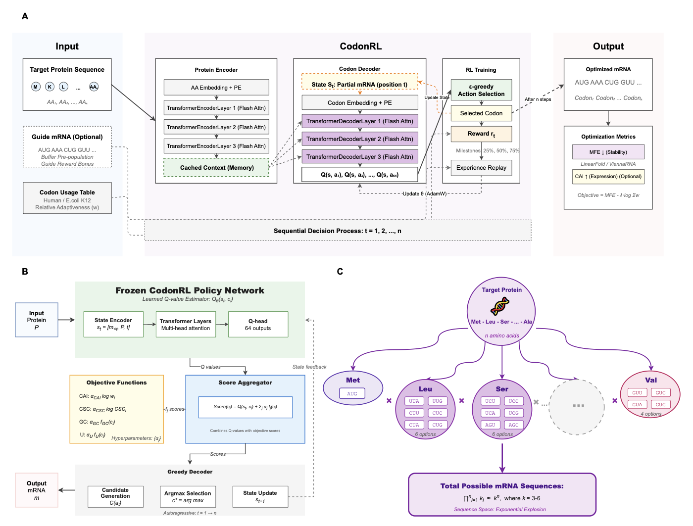

S Du, Gün Kaynar, J Li, Z You, S Tang, C Kingsford
bioRxiv, 2026
Optimizing synonymous codon sequences to improve translation efficiency, RNA stability, and compositional properties is challenging because the search space grows exponentially with protein length and objectives interact through long range RNA structure. Dynamic programming-based methods can provide strong solutions for fixed objective combinations but are difficult to extend to additional constraints. Deep generative models require large-scale, high-quality mRNA sequence datasets for training, limiting applicability when such data are scarce. Reinforcement learning naturally handles sequential decision-making but faces challenges in codon optimization due to delayed rewards, large action spaces, and expensive structural evaluation. We present CodonRL, a reinforcement learning framework that learns a structural prior for mRNA design from efficient folding feedback and demonstration-guided replay, and then enables user-controlled multi-objective trade-offs during inference. CodonRL uses LinearFold for fast intermediate reward computation during training and ViennaRNA for final evaluation, warms up learning with expert sequences to accelerate convergence for global structure objectives, and introduces milestone-based intermediate rewards to address delayed feedback in long range optimization. On a benchmark of 55 human proteins, CodonRL outperforms GEMORNA, a state-of-the-art codon optimization method, across multiple metrics, achieving 9.5% higher codon adaptation index (CAI), 25.4 kcal/mol more favorable minimum free energy (MFE), and 3.4% lower uridine content on average, while improving codon stabilization coefficient (CSC) in over 90% of benchmark proteins under matched constraints. These gains translate into designs that are predicted to be more efficiently translated, more structurally stable, and less immunogenic, while supporting continuous objective reweighting at inference time.
